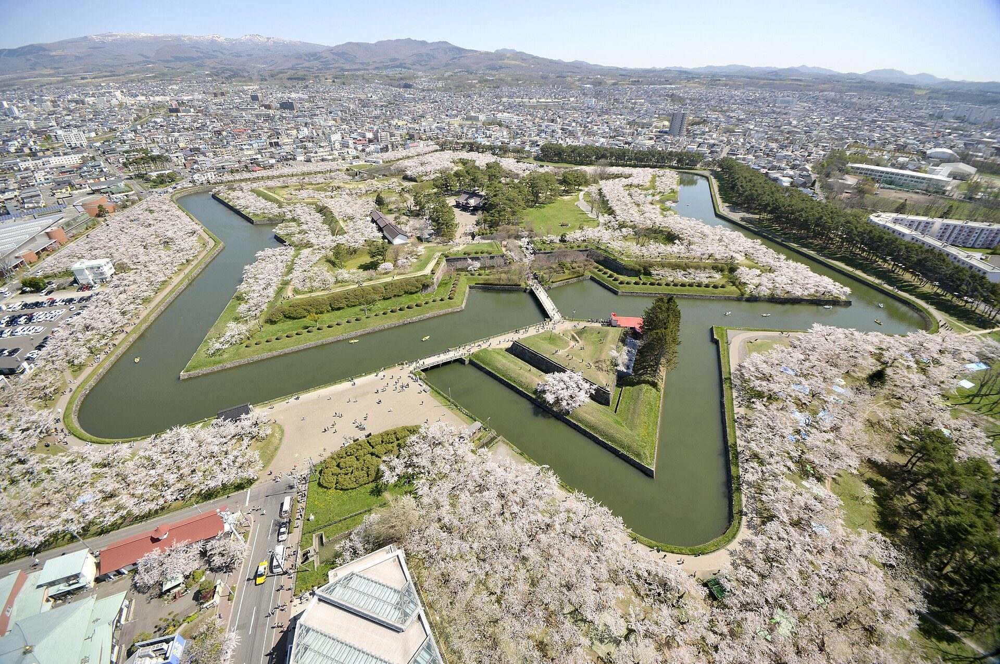
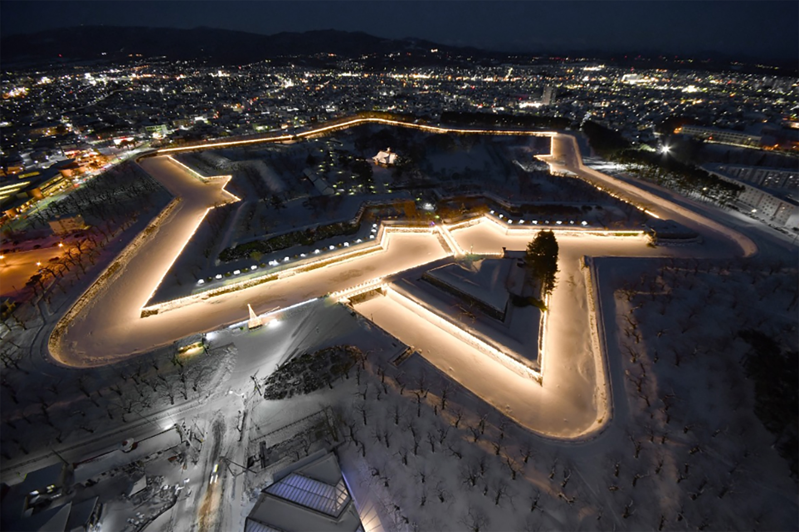
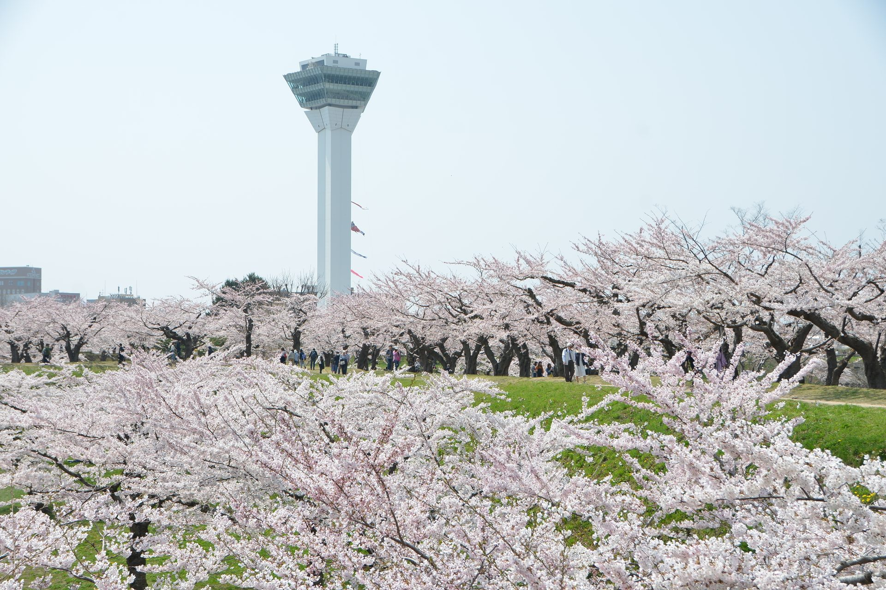
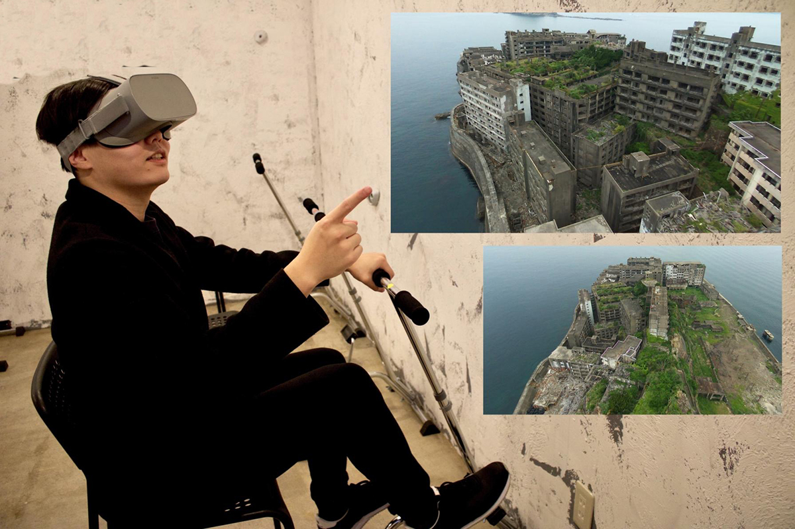
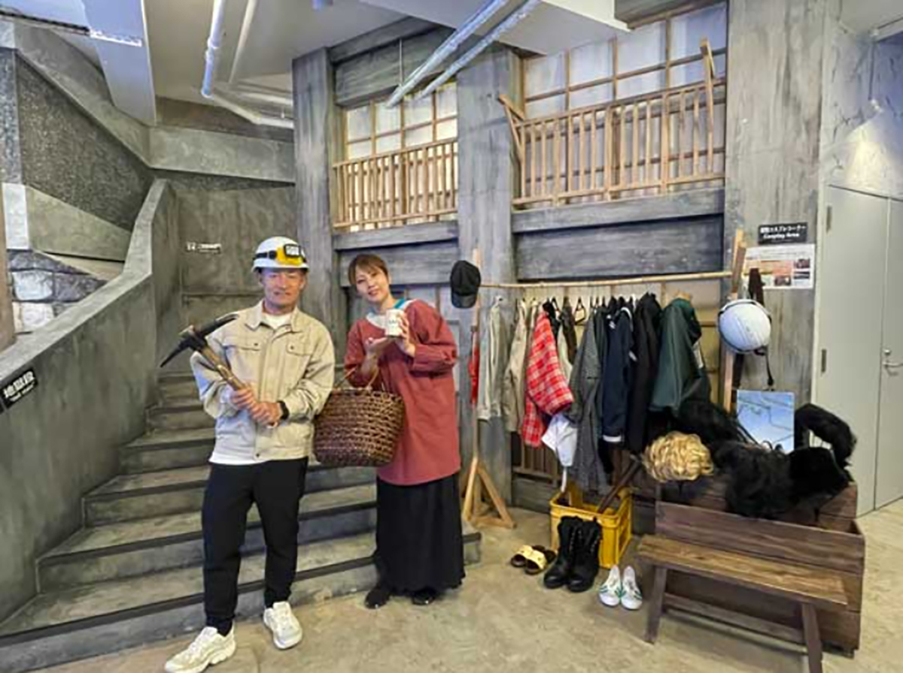
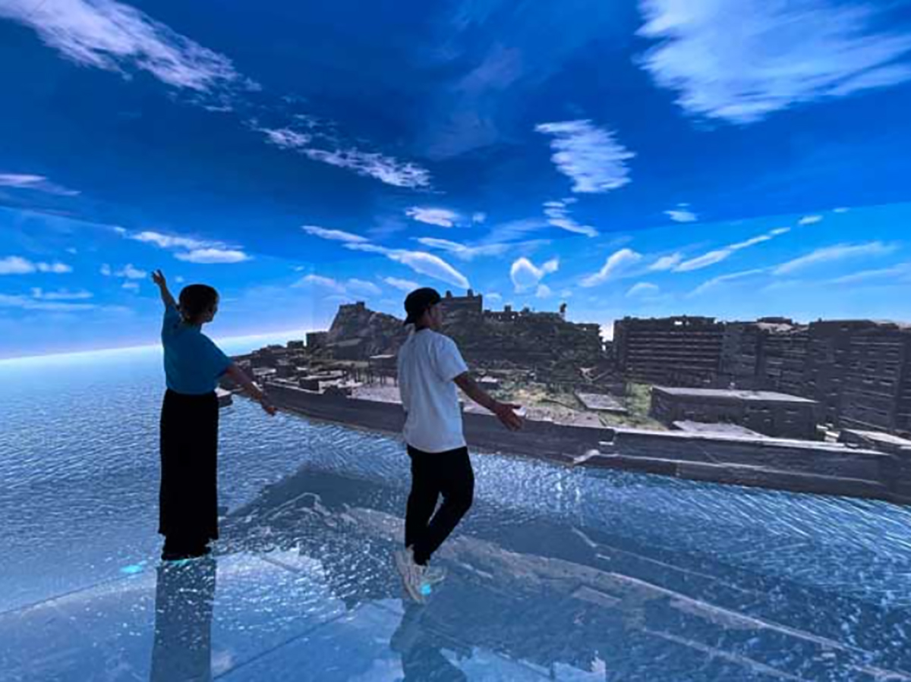
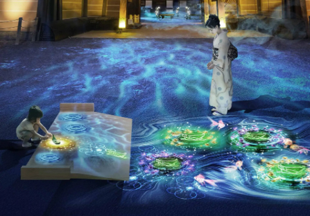
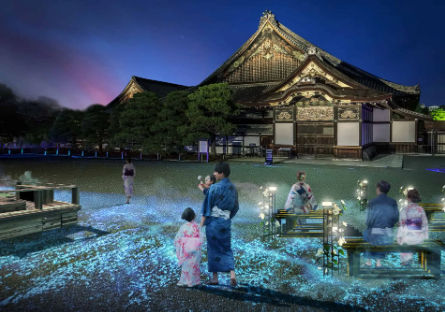
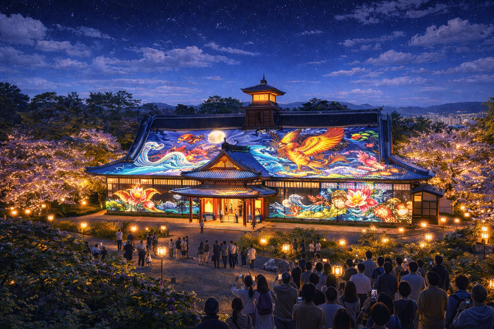

Project 02
Goryokaku 2.0
五稜郭を「見る場所」から「滞在できる場所」へ。
函館観光の第2の中心拠点に育てます。

Why This Matters
なぜ五稜郭の再設計が必要か
五稜郭は年間約100万人規模がタワーに来場する、函館最大級の観光拠点です。
しかし、滞在時間は約60〜90分。タワーで展望し、公園を散策して終わる——それが現在の構造です。
五稜郭は都市公園として整備されたため、観光体験が後から付け足された構造になっています。
この構造を変えないと、函館全体の滞在時間を延ばすのは難しい。
The Case for Extended Hours
なぜ五稜郭タワーを22時まで営業するのか
五稜郭は、日本唯一、星形城郭を展望タワーから俯瞰できる観光地です。
普通の城が「歩いて見る観光地」だとすれば、五稜郭は、城そのものを"上から見る体験"に価値があります。
そして夜になると、ライトアップされた星形城郭は"夜景として見る城"へと変わります。
これは日本でも五稜郭だけが持つ、非常に希少な観光価値です。
一方で、現在の五稜郭観光は「展望して、公園を散策して終わる」構造で、滞在時間は約60〜90分にとどまっています。
だからこそ、五稜郭タワーの営業時間を22時まで延長し、夜景・体験・飲食へとつながる導線をつくることが、五稜郭2.0の最初の一歩になります。
これは単なる営業時間延長ではなく、函館のナイトエコノミーを育てる起点です。
五稜郭の夜景価値
五稜郭は、日本でも数少ない星形城郭であり、
その特徴は建物ではなく地形そのものが星形を描いていることにあります。
多くの城郭ライトアップは建築物を照らしますが、
五稜郭では城郭の外周を照らすことで
星形の地形そのものが夜景として浮かび上がります。
さらに隣接する五稜郭タワーから
この星形城郭を俯瞰して体験できるため、
城郭そのものが夜景として成立する
非常に珍しい観光資源となっています。
五稜郭タワーの夜間活用は
新しい観光資源を作る施策ではなく、
既に存在する景観価値を
最大限活かすための施策です。
五稜郭だけが持つ価値
日本の城は通常「歩いて見る」観光地ですが、五稜郭は星形城郭そのものを展望タワーから俯瞰できます。夜間にはライトアップされた星形が"上から見る夜景"として、他にない体験価値を生みます。
展望施設の夜間需要
一般に展望施設では夜景需要が来場者の30〜40%を占めます。五稜郭タワーは年間約100万人規模の来場があり、18時→22時への営業延長で、夜来訪・滞在延長・周辺飲食消費の拡大が期待できます。
函館市観光動向調査、他展望施設事例をもとに整理
Only One in the World
世界唯一の星形夜景
五稜郭は、日本で唯一の星形城郭です。
さらに、展望タワーからその形を俯瞰できる城郭は
世界でも極めて珍しい存在です。
ライトアップされた星形の堀は、
夜になると都市の中に浮かび上がる
幾何学的な夜景となります。
つまり五稜郭は「星形城郭」「展望タワー」「夜景」という
三つの条件が重なる、世界でも稀な観光資源です。
営業時間を夜まで延ばすことは、新しい観光資源を作ることではありません。
すでに存在している価値を、きちんと体験できる時間に整えることです。
Current Structure
現在の観光構造
現在の五稜郭観光フロー：体験コンテンツがなく「見て終わり」の構造


Fig.1 — 五稜郭の現在。タワーからの展望（左）と公園散策（右）のみで完結する構造。
Redesign Direction
再設計の方向
Plan A：歴史体験の導入
「見る」から「体験する」へ転換。
幕末デジタルミュージアム（軍艦島デジタルミュージアムを参考）を堀内に建設。VR体験、コスチューム体験、立体展示で歴史を体感させる。
Plan B：夜経済創出（22時営業）
五稜郭の星形を活かした夜間観光。日本唯一「上から夜景として見える城郭」の価値を最大化する。
星形ライトアップ、夜の歴史演出イベント。タワーの営業時間を18時→22時へ延長し、夜の人流を創出。函館観光は夜の消費が弱く、五稜郭の夜間活用はナイトエコノミーの起点になる。
来場者 約20〜30万人 ／ チケット 約1,800円 ／ イベント売上 約4〜5億円
夜間イベントが人の流れ・滞在延長・宿泊増につながった実例。
Plan A — 歴史体験の導入イメージ



Plan B — 夜経済創出イメージ



After Redesign
再設計後の観光構造
再設計後の観光フロー：体験→飲食→夜間で3〜4時間の滞在構造を実現

Fig.2 — 歴史体験施設・夜間ライトアップ・周辺飲食を含むエリア構想。
Strategic Position
全体戦略における位置づけ
Goryokaku 2.0は、単なる施設改善ではありません。
函館全体の回遊構造を変えるための「第2の滞在拠点」です。
函館観光は夜の消費が弱く、五稜郭の夜間活用はナイトエコノミーの起点になります。
22時営業によって生まれる夜の人流は、Night Economyとの接続を生み、
体験コンテンツの導入は、Jomon Experienceとの相乗効果を生む。
現在の「展望→散策→終了」で60〜90分にとどまる構造を、
体験コンテンツと夜観光の導入で3〜4時間滞在する観光拠点へ転換する——それがGoryokaku 2.0の全体像です。